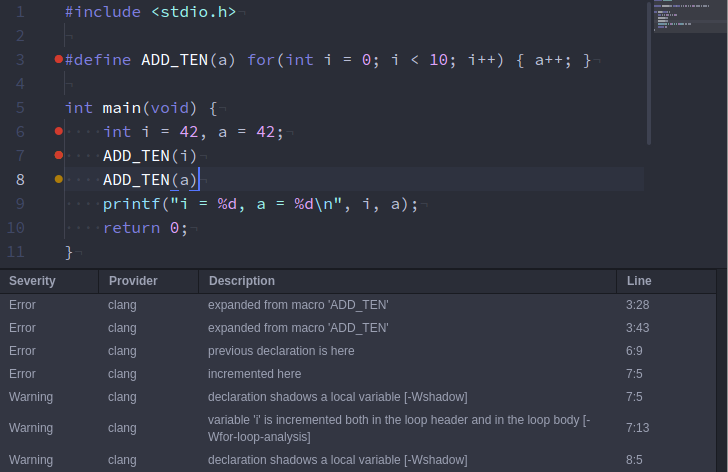

Mikhail Pak, March 2017
CC-BY-NC-SA 4.0
C programming is a profoundly diverse field and there are no silver bullets. This talk assumes that you...
write software for scientific computing;
target a limited number of platforms;
want to implement something mildly embedded or time-critical, e.g. a control algorithm or an estimator.
This talk may be not helpful for you, if you...
write bare-metal C;
want to write a larger piece of software (did anybody say git?);
target a lot of platforms.
Developed in 1960s–1970s by Dennis Ritchie as a descendant of BCPL and B.
Standards:
1978: K&R C
1990: ANSI C aka C89 aka C90
1999: C99
2008: Embedded C
2011: C11
Compilers:
1987: gcc (GNU Project; GPL)
1993: msvc (Microsoft; proprietary)
2007: clang (Apple, Microsoft, Google etc.; BSD)
Inspired by Joel Spolsky's ‘The Joel Test,’ my ‘9-8-7 Test’ has 24 short questions that can be answered with a quick yes or no.
These are:
9 questions about safety
8 questions about maintainability
7 questions about performance
For each yes, you get 1 point. A score of 24 is perfect, 23 to 16 is acceptable and if you have fewer than 15 points you should probably review your design choices and processes.
Antipitch:
Sticking to some (if not most) of these rules will cause you additional overhead. But do you want to take risks during C development? Write a prototype if you want to move fast and break things.
Some of these rules are more about your development mindset, they will not help you immediately. You should rather learn and improve over time.
Avoid cargo cult! Ultimately, there is only one way to improve: Make mistakes (a lot of them), fail hard and learn from these failures.
Do you really know C, especially its undefined behaviour?
Is your data immutable by default?
Is your state explicit?
Are as many functions pure as possible?
Do you always take care of the unhappy path?
Do you restrict your use of macros?
Do you always have your linter on?
Do you have comprehensive tests and run them after each commit?
Do you sacrifice performance for safety?
C has deceptively simple syntax and semantics. In reality, it has vast swathes of undefined behaviour, which means that compiler may do literally anything.
Few examples:
Violating the strict aliasing rule
Dereferencing a NULL pointer
Use of uninitialized variables and pointers
Out of bounds array accesses
Signed integer overflow
Fun fact: The word ‘undefined’ occurs 184 times in the C99 standard. To put it into perspective, the word ‘pointer’ occurs 637 times.
Signed integer overflow: An example from Dietz et. al.:
#include <stdio.h>
#include <limits.h>
int foo(int x) {
return (x + 1) > x;
}
int main(void) {
printf("Literal: %d\n", (INT_MAX + 1) > INT_MAX);
printf("Function call: %d\n", foo(INT_MAX));
return 0;
}
What would you expect?
Let's try clang:
$ clang -O0 signed_int_overflow.c -o a.out && ./a.out
Literal: 0
Function call: 0
$ clang -O1 signed_int_overflow.c -o a.out && ./a.out
Literal: 0
Function call: 1
What about gcc?
$ gcc -O0 signed_int_overflow.c -o a.out && ./a.out
Literal: 0
Function call: 0
$ gcc -O1 signed_int_overflow.c -o a.out && ./a.out
Literal: 0
Function call: 0
$ gcc -O2 signed_int_overflow.c -o a.out && ./a.out
Literal: 0
Function call: 1
$ clang -O0 -S -masm=intel signed_int_overflow.c
foo:
push rbp
mov rbp, rsp
mov dword ptr [rbp - 4], edi
mov edi, dword ptr [rbp - 4]
add edi, 1
cmp edi, dword ptr [rbp - 4]
setg al
and al, 1
movzx eax, al
pop rbp
ret
$ clang -O1 -S -masm=intel signed_int_overflow.c
foo:
mov eax, 1
ret
So why do we tolerate undefined behaviour?
Undefined behaviour is not bad per se. Actually, it allows quite a lot of optimisations!
However, it is also a problem. A lot of codebases that compiled perfectly a couple of years ago get broken as compilers perform more and more aggressive optimisations.
Takeaway points:
Learn C really well (cf. the further reading section)
Look out for undefined behaviour
Learn about the specifics of your target platform
Learn about the implementation details of your toolchain
Declaring all const variables as such has been a conventional wisdom for ages.
Of course one cannot (and should not try to) achieve complete immutability in C!
Indeed, in-place computations are often critical for high-performance code.
Using mutable variables and data structures is ok, but it is a design choice that should be justified and documented.
Why bother?
Obviously, const protects (to some degree) against accidental mutations.
Immutable data is thread-safe.
It is an important information about code invariants.
Accidentally mutating data can be very dangerous. Guess what happens here:
int main(void) {
char *foo = "Hello world!";
foo[1] = 'a'; // this is an accident
return 0;
}
Yay, a segfault! Declaring
const char *foo = "Hello world!";
would have resulted in a compilation error.
Another example. Here, const helps us to undestand
the workings of vec_sum:
void vec_sum(const double a[restrict], const double b[restrict],
double res[restrict], const size_t len) {
for (size_t i = 0; i < len; i++) { res[i] = a[i] + b[i]; }
}
It is quite probable that your problem is inherently stateful. So instead of trying to smash the state (this will not work) or hiding it, make it explicit!
Programs with explicit state are much easier to reason about and much easier to test.
However:
‘There are two ways of constructing a software design: One way is to make it so simple that there are obviously no deficiencies, and the other way is to make it so complicated that there are no obvious deficiencies. The first method is far more difficult.’
Tony Hoare, 1980 Turing Award Lecture
Making state explicit is not a coding skill. It is a question of mentality, of your design process and the way you think about problems.
We call a function pure, if...
it always evaluates to the same result value given the same argument values and
evaluation of the result does not cause any side effects or output, such as mutation.
Definitely not pure:
accessing and mutating global state, e.g. statically allocated arrays
performing I/O operations
nondeterministic computations, e.g. using pseudorandom values
The advantages of purity sound familiar: Pure functions are much easier to reason about and much easier to test.
However, pureness is impossible to achieve in practice in C.
We must settle for a reasonable approximation for it, e.g. a function might be considered quasi-pure if all its side effects are encoded in the function signature:
/// \brief Get vertex coordinates for given model parameters
/// \param [in] par model parameters \f$\mathbf{x}\f$
/// \param [out] vertices_x vertex x-axis coordinates
/// \param [out] vertices_y vertex y-axis coordinates
void get_vertex_coordinates(const double par[restrict static NUM_PARS],
double vertices_x[restrict static NUM_VERTICES],
double vertices_y[restrict static NUM_VERTICES]);
When coding with this mindset, you will slowly notice that you have a lot of small, specialised pure functions that ‘do some work.’
They are composed and coordinated together at few isolated, compact places, where all the impure actions and mutations happen.
This is the ‘Functional core—Imperative shell’ architecture which was first presented by Gary Bernhardt in 2012.
The metaphor of happy and unhappy paths was introduced in 2014 by Scott Wlaschin in his talk about railway-oriented programming in F#.
Unfortunately, these very elegant ideas cannot be directly applied to C (while you can roughly approximate monads in C, it doesn't mean you should).
However, we can use the notion of the unhappy path as an inspiration for better and robuster code!
We always focus on doing something useful and cool. So naturally, our programs follow the happy path of the intended functionality.
But how should we handle the unhappy path?
For instance, unhappy paths arise...
when you allocate resources, e.g. memory, or perform I/O operations
when you process user input
due to integer overflows or floating-point weirdness
when using library functions
...and in many other cases
For instance, consider this snippet where we allocate a dynamic array:
int *arr = malloc(len);
// Do something with `arr`
free(arr);
return 0;
When len is small, we're on the happy path and everything's ok.
But what if we don't have enough memory?
Then we're on the unhappy path we've not thought about:
arr is a null pointer and all operations with it are... undefined behaviour.
Or, in most cases,
Segmentation fault (core dumped)
So let's take care of the unhappy path:
int *arr = malloc(len);
if (arr == NULL) { printf("Could not allocate!\n"); return 1; }
// Do something with `arr`
free(arr);
return 0;
Here's another example, Euclidean vector norm:
#include <stddef.h>
#include <math.h>
double euclidean_norm(const double x[restrict], const size_t len) {
double acc = 0.0;
for (size_t i = 0; i < len; i++) { acc += x[i]*x[i]; }
return sqrt(acc);
}
Happy path:
const double foo[2] = {3.0, 4.0};
printf("%f\n", euclidean_norm(foo, 2)); // 5.000000
Unhappy path:
const double bar[2] = {3.0e200, 4.0e200}; // `double` goes up to 1.0e308
printf("%f\n", euclidean_norm(bar, 2)); // inf
Home assignment: How can we take care of this unhappy path?
I recommend using macros only for program-wide configuration and literals.
The problem is, C macros are unhygienic:
#include <stdio.h>
#define ADD_TEN(a) for (int i = 0; i < 10; i++) { a++; }
int main(void) {
int i = 42, a = 42;
ADD_TEN(i)
ADD_TEN(a)
printf("i = %d, a = %d\n", i, a);
return 0;
}
evaluates to this:
i = 42, a = 52
What happened here? Pro tip: The -E flag tells compiler to expands macros and stop:
clang -E macros_hell.c -o macros_hell_expanded.c
int main(void) {
int i = 42, a = 42;
for (int i = 0; i < 10; i++) { i++; }
for (int i = 0; i < 10; i++) { a++; }
printf("i = %d, a = %d\n", i, a);
return 0;
}
The variable i was shadowed by the one introduced
in the macro for-loop scope!
In such cases, you should use inline-d functions.
Mark them with always_inline or hot
attributes if you're paranoid about performance.
You really should. Here is linter-clang in Atom:

And do not forget to use all the flags:
-Weverything in clang.
Tests you must have:
unit tests (for the functional core)
integration tests (for the imperative shell)
regression tests against a high-level language implementation
I argue that if you write a compact and specialised piece of software (e.g. controller or estimator), a branch coverage of 100% is a must.
Furthermore, you should think about instrumentalising your code with
valgrind and AddressSanitizer
if you use dynamic memory allocation.
Tests you should have:
property-based tests
fuzz tests (if applicable)
mutation tests
You should also think about running tests with different compilers,
e.g. with both gcc and clang.
And yes, ‘after each commit’ absolutely means after each commit!
Use TravisCI or roll your own CI.
Even better, use pre-commit git hooks.
Do you know exactly why and where you need C?
Do you have a fully featured prototype written in a high-level language?
Do you have and enforce naming and style conventions?
Are you explicit about your assumptions?
Are your specification and documentation good?
Do you write tests and documentation before code?
Can you build and test in one step?
???
Do you know the computational complexity of your algorithms?
??? - Do you understand pointer aliasing?
Do you have representative benchmarks?
Do you profile and use PGO?
Do you optimise for cache and memory access?
Do you know your compilers and their flags?
Do you know when to stop?
If you only remember three things about this talk, remember these:
Avoid using C if you can.
Question your assumptions and knowledge.
Always sacrifice performance for safety. Always.
Will Dietz, Peng Li, John Regehr, and Vikram Adve. Understanding integer overflow in C/C++. Proceedings of the 34th International Conference on Software Engineering (ICSE), Zurich, Switzerland, June 2012. Full text.